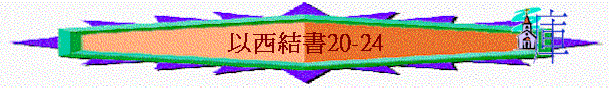

|
真 知 道 祂 |
|||
|
先知的看見(1-3) |
選民的醒覺(4-24) |
列邦的發現(25-39) |
餘民的盼望(40-48) |
|
祂是滿有榮耀權能的神 |
祂是成就怒中所定的神 |
祂是耶和華以色列的神 |
祂是復臨選民中間的神 |
二.選民的醒覺(4-24)───祂是成就怒中所定的神
1.具體的表明→表明神的忿怒(4-11)
2.逼切的呼籲→顯出神的心腸(12-19)3.不斷的審問→証明神的公義/人的不義(20-23)
~特 點:3次題到「你要審問」「知道可憎的事」（20:4,22:2,23:36）,頗多「報應」「刑罰」字眼
~時 間:「第七年五月初十日」20:1→那時西底家想投靠埃及
~問 題:「….有以色列的幾個長老求問耶和華….」20:1
★他們可能覺得投靠埃及,南國仍有希望,轉機
★但似乎看不到自己的問題,過犯,本相,是否值得神施恩
- 神似乎要不斷審問以色列人,要他們反醒,清楚自己的不義,自己的醜惡根本不值得原諒,不值得可向神求問,神一定會向他們顯公義,秉公辦理,報應他們!
「人子啊，你要審問審問他們嗎？你當使他們知道他們列祖那些可憎的事。」20:4
i.不變的悖逆
(1)在埃及的悖逆→有神的顯現卻仍貪戀偶像
「對他們說，主耶和華如此說：當日我揀選以色列，向雅各家的後裔起誓，在埃及地將自己向他們顯現，說：我是耶和華你們的神。」20:5
「他們卻悖逆我，不肯聽從我，不拋棄他們眼所喜愛那可憎之物，不離棄埃及的偶，我就說，我要將我的忿怒傾在他們身上，在埃及地向他們成就我怒中所定的。」20:8
(2)在曠野的悖逆→有神的聖言卻仍厭棄典章
「這樣，我就使他們出埃及地，領他們到曠野，將我的律例賜給他們，將我的典章指示他們；人若遵行就必因此活著。又將我的安息日賜給他們，好在我與他們中間為證據，使他們知道我耶和華是叫他們成為聖的。以色列家卻在曠野悖逆我，不順從我的律例，厭棄我的典章（人若遵行就必因此活著），大大干犯我的安息日。「我就說，要在曠野將我的忿怒傾在他們身上，滅絕他們。」20:10-13
(3)管教後的悖逆→有人的鑑戒卻仍重蹈覆徹
「並且我在曠野向他們起誓，必不領他們進入我所賜給他們流奶與蜜之地（那地在萬國中是有榮耀的）」20:15
「我在曠野對他們的兒女說：不要遵行你們父親的律例，不要謹守他們的惡規，也不要因他們的偶像玷污自己。」20:18
「只是他們的兒女悖逆我，不順從我的律例，也不謹守遵行我的典章（人若遵行就必因此活著），干犯我的安息日。「我就說，要將我的忿怒傾在他們身上，在曠野向他們成就我怒中所定的。」20:21
(4)在迦南的悖逆→有神的恩典卻仍事奉別神
「因為我領他們到了我起誓應許賜給他們的地，他們看見各高山、各茂密樹，就在那裡獻祭，奉上惹我發怒的供物，也在那裡焚燒馨香的祭牲，並澆上奠祭。我就對他們說：你們所上的那高處叫什麼呢？（那高處的名字叫巴麻直到今日。）」20:28-29
ii.不斷的寬容
「我卻為我名的緣故沒有這樣行，免得我名在他們所住的列國人眼前被褻瀆；我領他們出埃及地，在這列國人的眼前將自己向他們顯現。」20:9
「我卻為我名的緣故，沒有這樣行，免得我的名在我領他們出埃及的列國人眼前被褻瀆。」20:14
「雖然如此，我卻為我名的緣故縮手沒有這樣行，免得我的名在我領他們出埃及的列國人眼前被褻瀆。」20:22
~神一直沒有滅絕以色列人，是否因為他們好呢?
iii.公義的刑罰
~主要工具:刀 ~目的:滅族
「主耶和華說：「我指著我的永生起誓，我總要作王，用大能的手和伸出來的膀臂，並傾出來的忿怒，治理你們。我必用大能的手和伸出來的膀臂，並傾出來的忿怒，將你們從萬民中領出來，從分散的列國內聚集你們。」20:33-34
(1)帶出
「我必帶你們到外邦人的曠野，在那裡當面刑罰你們。」20:35
(2)焚燒
「對南方的樹林說，要聽耶和華的話。主耶和華如此說：我必使火在你中間著起，燒滅你中間的一切青樹和枯樹，猛烈的火焰必不熄滅。從南到北，人的臉面都被燒焦。凡有血氣的都必知道是我耶和華使火著起，這火必不熄滅。」20:47-48
(3)出鞘
「對以色列地說，耶和華如此說：我與你為敵，並要拔刀出鞘，從你中間將義人和惡人一併剪除。」21:3
「一切有血氣的就知道我耶和華已經拔刀出鞘，必不再入鞘。」21:5
(4)舉刀
「耶和華的話又臨到我說：」21:18
「耶和華的話又臨到我說：「人子啊，你要定出兩條路，好使巴比倫王的刀來。這兩條路必從一地分出來，又要在通城的路口上畫出一隻手來。你要定出一條路，使刀來到亞捫人的拉巴；又要定出一條路，使刀來到猶大的堅固城耶」21:18-20
~神用巴比倫如刀刑罰南國
「人子啊，你要審問審問這流人血的城嗎？當使他知道他一切可憎的事。」22:2
i.臭惡的城邑
(1)對人的醜惡「在你中間有輕慢父母的，有欺壓寄居的，有虧負孤兒寡婦的。」22:7
「在你中間有為流人血受賄賂的；有向借錢的弟兄取利，向借糧的弟兄多要的。且因貪得無饜，欺壓鄰舍奪取財物，竟忘了我。這是主耶和華說的。」22:12
(2)肉身的淫亂
「在你中間有露繼母下體羞辱父親的，有玷辱月經不潔淨之婦人的。這人與鄰舍的妻行可憎的事；那人貪淫玷污兒婦；還有玷辱同父之姊妹的。」22:10-11
(3)靈裏的不潔
「你藐視了我的聖物，干犯了我的安息日。」22:8
「其中的祭司強解我的律法，褻瀆我的聖物，不分別聖的和俗的，也不使人分辨潔淨的和不潔淨的，又遮眼不顧我的安息日；我也在他們中間被褻慢。」22:26
ii.公義的審判
~主要工具:火 ~目的:除污
「所以主耶和華如此說：因你們都成為渣滓，我必聚集你們在耶路撒冷中。人怎樣將銀、銅、鐵、鉛、錫聚在爐中，吹火鎔化；照樣，我也要發怒氣和忿怒，將你們聚集放在城中，鎔化你們。」22:19-20
「所以我將惱恨倒在他們身上，用烈怒的火滅了他們，照他們所行的報應在他們頭上。這是主耶和華說的。」22:31
a.審問淫亂的女子→投靠外邦(23)
「耶和華又對我說：「人子啊，你要審問阿荷拉與阿荷利巴嗎？當指出他們所行可憎的事。」23:36
「他們的名字，姊姊名叫阿荷拉，妹妹名叫阿荷利巴。他們都歸於我，生了兒女。論到他們的名字，阿荷拉就是撒瑪利亞，阿荷利巴就是耶路撒冷。」23:4
~阿荷拉→撒瑪利亞, 阿荷利巴→耶路撒冷, 兩字有「帳幕」含意
i.行淫的對象
(1)亞述
「阿荷拉就與亞述人中最美的男子放縱淫行，他因所戀愛之人的一切偶像，玷污自己。」23:7
「他妹妹阿荷利巴雖然看見了，卻還貪戀，比他姊姊更醜；行淫亂比他姊姊更多。他貪戀鄰邦的亞述人，就是穿極華美的衣服，騎著馬的省長、副省長，都是可愛的少
年人。」23:11-12
(2) 埃及
「他還加增他的淫行，追念他幼年在埃及地行邪淫的日子。」23:19
(3)巴比倫
「阿荷利巴又加增淫行，因他看見人像畫在牆上，就是用丹色所畫迦勒底人的像，腰間繫著帶子，頭上有下垂的裹頭巾，都是軍長的形狀，仿照巴比倫人的形像；他們的故土就是迦勒底。」23:14-15
ii.行淫的不是
~投靠外邦,與外邦同行有甚麼不妥?
(1)與神生疏
「這樣，他顯露淫行，又顯露下體；我心就與他生疏，像先前與他姊姊生疏一樣。」23:18
(2)不靠真神
「主耶和華如此說：「因你忘記我，將我丟在背後，所以你要擔當你淫行和淫亂的報應。」」23:35
「這樣，我必使你的淫行和你從埃及地染來的淫亂止息了，使你不再仰望亞述，也不再追念埃及。」23:27
(3)重回舊路
「他還加增他的淫行，追念他幼年在埃及地行邪淫的日子。」23:19
(4)玷污自己
「巴比倫人就來登他愛情的床，與他行淫玷污他。他被玷污，隨後心裡與他們生疏。」23:17
「他們行淫，手中有殺人的血，又與偶像行淫，並使他們為我所生的兒女經火燒給偶像。此外，他們還有向我所行的，就是同日玷污我的聖所，干犯我的安息日。他們殺了兒女獻與偶像，當天又入我的聖所，將聖所褻瀆了。他們在我殿中所行的乃是如此。」23:37-39
iii.公義的報應
~主要的工具:外邦人
「阿荷利巴啊，主耶和華如此說：「我必激動你先愛而後生疏的人來攻擊你。我必使他們來，在你四圍攻擊你。」23:22
「人必照著你們的淫行報應你們；你們要擔當拜偶像的罪，就知道我是主耶和華。」23:49
4.最後的定案→肯定神的成就(24)
~時 間:「第九年十月初十日」24:1,正是尼布甲尼撒王圍攻耶路撒冷時候
~特 點:裏面的豫兆全部是很快發生,很快實現(一日內就成就)
a.象徵的預兆
i.鍋肉一同焚燒的比喻→他們所倚靠的必被毀滅
「要向這悖逆之家設比喻說，主耶和華如此說：將鍋放在火上，放好了，就倒水在其中； 將肉塊，就是一切肥美的肉塊、腿，和肩都聚在其中，拿美好的骨頭把鍋裝滿；取羊群中最好的，將柴堆在鍋下，使鍋開滾，好把骨頭煮在其中。」24:3-5
~他們一直以為耶路撒冷城是他們的倚靠
「他們說：「蓋房屋的時候尚未臨近；這城是鍋，我們是肉。」」11:3
~但最終卻被徹底毀滅
「你們在這城中殺人增多，使被殺的人充滿街道。所以主耶和華如此說：你們殺在城中的人就是肉，這城就是鍋；你們卻要從其中被帶出去。你們怕刀劍，我必使刀劍臨到你們。這是主耶和華說的。」11:6-8
「這城必不作你們的鍋，你們也不作其中的肉。我必在以色列的境界審判你們。」 11:11
ii.先知妻忽死亡的預兆→他們所喜愛的必被取去
「人子啊，我要將你眼目所喜愛的忽然取去，你卻不可悲哀哭泣，也不可流淚，只可歎息，不可出聲，不可辦理喪事；頭上仍勒裹頭巾，腳上仍穿鞋，不可蒙著嘴唇，也不可吃弔喪的食物。於是我將這事早晨告訴百姓，晚上我的妻就死了。次日早晨我便遵命而行。」24:16-18
b.成就的信息
「我耶和華說過的必定成就，必照話而行，必不返回，必不顧惜，也不後悔。人必照你的舉動行為審判你。這是主耶和華說的。」24:14
i.神的說話必定會成就
ii.神的說話可很快成就
「於是我將這事早晨告訴百姓，晚上我的妻就死了。次日早晨我便遵命而行。」24:18
iii.神的審判必不後悔
c.先知的順服
「於是我將這事早晨告訴百姓，晚上我的妻就死了。次日早晨我便遵命而行。」24:18
i.放低理性
ii.放低感性
總結:
4-11具體的表明→表明神的忿怒
12-19逼切的呼籲→顯出神的心腸
20-23不斷的審問→証明神的公義
24最後的定案→肯定神的成就